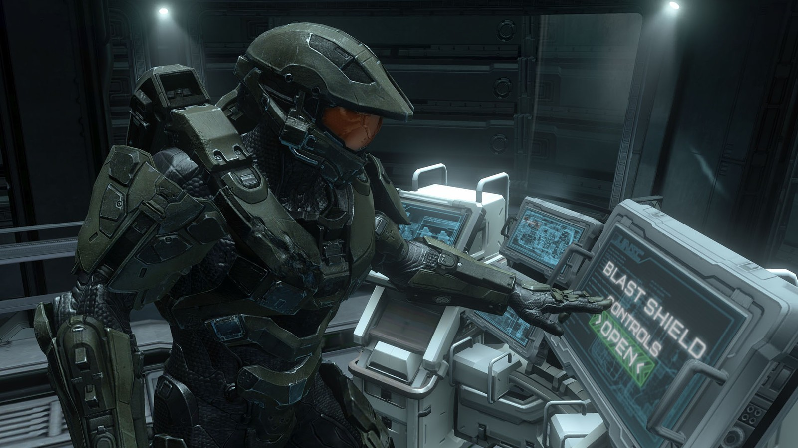
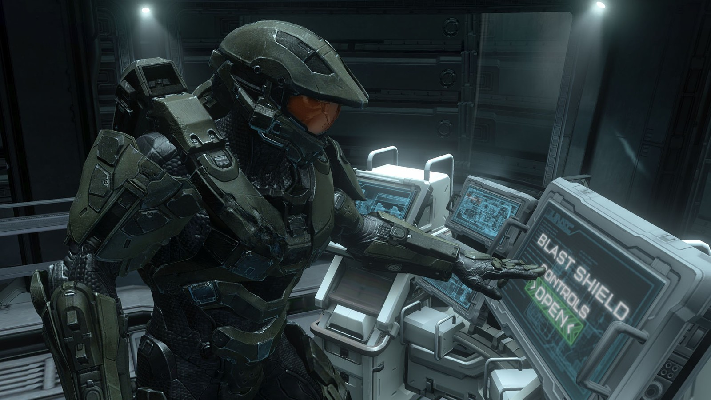

Shooters/Shoot 'em up:
This genre consists of many subgenres but can be mostly related to first person shooters (FPS). In a first person view the player plays through the eyes of the character they are controlling. There are also third person shooters where the player can see the whole character and a top down shooter where the player sees everything from above the character.
Enter the Gungeon: Advanced Gungeons and Draguns
The game to start us off at number 3 is a game I recently just got into a few months ago and is an example of a top down shooter. I always loved challenging games and the pixel art style in games so this game was very appealing to me. "Enter the Gungeon" is a shoot 'em up gunfight dungeon crawler where you take on the gungeon to reach the ultimate treasure. You shoot your way through gundead and very challenging bosses that will take you muiltiple tries to beat. Be careful though, after every death you restart from the beginning. Throughout the game you will come across merchants that if rescued will sell you better weapons so you will have more of an edge in fights. I found this game to be very enjoyable although some parts would be frustrating whenever I would acquire a new weapon that I had unlocked and could now beat the boss with ease it made victory that much sweeter!
My score: 9/10
- This game is rated 'E' for everyone
- Metacritic score: 87%
- Steam score: 9/10
- IGN score: 8.5/10
- Multi-platform
3. Enter the Gungeon: Advanced Gungeons and Draguns


Halo: Master Chief Collection
At number 2 we have Halo. Halo is one of my favorite games and I have played all the Halo games except for one, Halo Reach. I have invested thousands of hours in halo 3 alone. Since there are so many Halo games out it may be a little intimadating for newcomers to the franchise. I would suggest starting with the Halo Master Chief Collection which is a collection of all the Halo games 1-4 (you can skip ODST). This will give you an idea of the whole story without having to buy separate games, you can also dive into multiplayer which is also a compilation of all 4 games so you will be able to play on any map in any different game. I would recommend this game to anyone since there is plenty for any kind of gamer. There are party playlists for casual players, and there are MLG playlists for the more competitive hardcore gamers. You won't have to worry jumping into the franchise late since 343 studios is still pumping out Halo games with the next released being announced this past E3 (2018).
My score: 9.5/10
- This game is rated 'M' for mature (ages 17 and up)
- IGN score: 9/10
- Eurogamer score: 9/10
- Metacritic score: 85%
- This is an Xbox Exclusive title but hints have been made it may be making its way to PC in the upcoming Halo games.
2. Halo: Master Chief Collection
 

Battlefield
Just like Halo, Battelfield is made up of many in its franchise. I was first introduced into the Battlefield games when I played Bad company which is one of its sub games. Bad company was an incredible game and was a total 360 from the usual shooting games I had played before. In the battlefield games players have to take into account some realistic mechanics such as bullet drop. You will have to adjust your aim depending on the distance and the recoil of your gun. Not only was the gun play realistic the vehicles and planes were too, there was also an emphasis on historical accuracy when games such as the most recent Battlefield, Battlefield 1. I recommend this game for someone who is looking for a realistic shooter with historical accuracy. This game doesn't have too big of a learning curve but it is definitely more skilled shooter in terms of gun play. This is by far one of my favorite games to play and I am heavily invested in the next installment battlefield 5!
My score: 10/10
- This game is rated 'M' for mature (ages 17 and up)
- Gamespot score: 9/10
- Common Sense Media score: 5/5
- Metacritic score: 89%
- This game is multi-platform